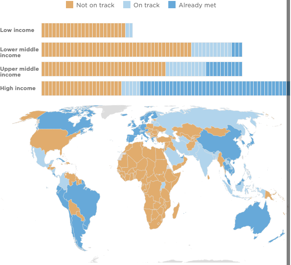

<%= await t.include("lib/_head.html") %>

<% if (COPY.labels.headline) { %>
<h1><%= t.smarty(COPY.labels.headline) %></h1>
<% } %>

<% if (COPY.labels.subhed) { %>
<h2><%= t.smarty(COPY.labels.subhed) %></h2>
<% } %>

<div class="controls" aria-hidden="true" id="table-controls">
  <input type="radio" name="table-mode" value="track" id="mode-track" checked>
  <label for="mode-track" class="label-track">Status of 70% target</label>
  <input type="radio" name="table-mode" value="rate" id="mode-rate">
  <label for="mode-rate" class="label-rate">Vaccination rate</label>
</div>

<div id="map" class="graphic" role="img"
<% if (COPY.labels.screenreader) { %>
aria-label="<%- COPY.labels.screenreader %>"
<% } %>
>

    
</div>

<% if (COPY.labels.footnote) { %>
<div class="footnotes">
    <h4>Notes</h4>
    <p><%= COPY.labels.footnote %></p>
</div>
<% } %>

<div class="footer">
    <% if (COPY.labels.source) { %><p>Source: <%= COPY.labels.source %></p><% } %>
    <% if (COPY.labels.credit) { %><p>Credit: <%= COPY.labels.credit %></p><% } %>
</div>

<script type="text/javascript">
    var DATA = <%= JSON.stringify(COPY.data) %>;
</script>

<script src="./graphic.js"></script>

<%= await t.include("lib/_foot.html") %>